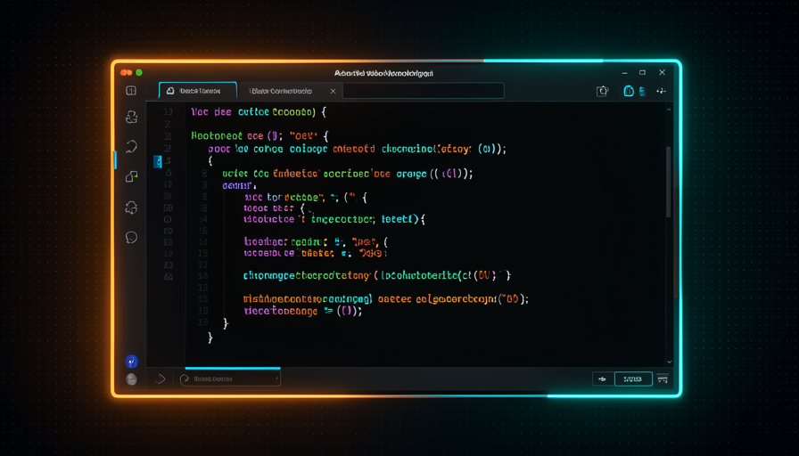
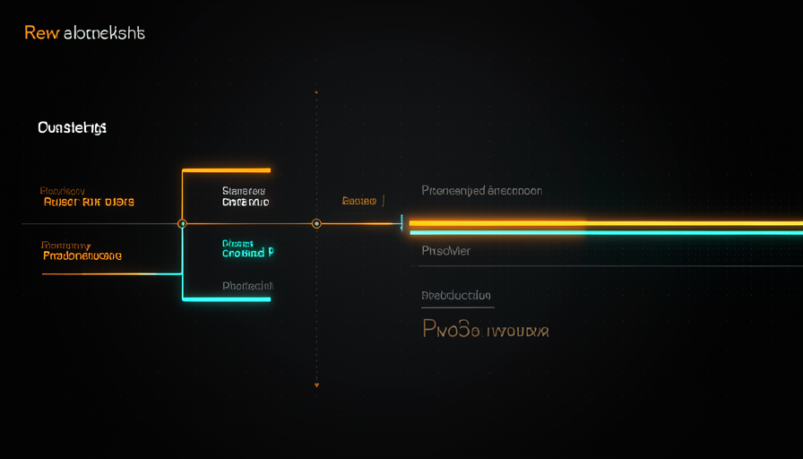

📖 Glosario vivo (lee antes — vuelve siempre que lo necesites)
Aquí revisas el trabajo que el agente hizo por su cuenta (AFK, GitHub Actions, colas). Estos son los términos nuevos de este módulo: fíjalos:
🔍 Qué te aporta el review
🧠 Imagínalo así: eres el editor de un periódico. Leer el texto del reportero antes de publicarlo no sirve solo para «detectar errores»: también sirve para que tú entender cómo piensa ese reportero, dónde suele equivocarse y cómo mejorar la próxima pauta. La review tiene dos funciones, no una.
Cuando el agente trabaja solo — en AFK, en PRs, en colas de tareas — queda una pregunta: ¿para qué sirve el revisión? Matt Pocock da una respuesta doble. La primera función es obvia: la revisión es un barrera (gate) para cosas peligrosas — filtración de secretos, brechas de seguridad, cambios que podrían, por ejemplo, exponer el código fuente del propio Claude Code. Aquí la revisión es una barrera de protección, y es importante.
Pero hay una segunda función que casi todos pasan por alto —y Pocock insiste en ella—: la revisión te da insight en tu propio sistema. Al ver trabajar al agente, descubres cómo tu harness (la tubería que produce el código) se comporta en la práctica. Es observabilidad: mejoras el harness con el tiempo, y para eso necesitas ver lo que está pasando. En sus palabras: "estamos revisando no solo el código, sino también el sistema que produce el código." O error común es tratar el review solo como una búsqueda de bugs y, con prisa por ganar velocidad, recortarlo todo: ahorras tiempo y te quedas a ciegas. Sin observabilidad, delegas a ciegas y nunca ajustas el motor que lo produce todo.
El review no es solo cazar bugs: también es tu ventana para entender y afinar el sistema que produce el código.

⚠️ Error común de principiante
Querer "automatizarlo todo" y desactivar la revisión desde el día 1. Sí, ganas velocidad, pero te quedas a ciegas ante tu propio sistema y no sabes cómo mejorarlo. Empieza revisando bastante; elimina checkpoints poco a poco, a medida que ganas confianza.
En 1 frase: la revisión es un portón (detiene lo peligroso) y una ventana (te muestra el sistema): no tires la ventana.
Profundiza (opcional): ¿por qué «filtrar el código fuente de Claude Code»?
Cuando el agente se ejecuta dentro de tu entorno, tiene acceso a archivos sensibles: claves de API, secretos de producción y, en algunas configuraciones, partes del propio harness. Un PR mal revisado podría, por descuido, pegar un secreto en un archivo público o abrir una brecha. Por eso el punto de control de seguridad es el checkpoint que recortas por último: el costo de un error aquí es demasiado alto.
➡️ Mover el punto de control hacia la derecha
🧠 Imagínalo así: una cinta transportadora de fábrica. Antes, un inspector detenía CADA pieza para revisarla. Era caro y lento. La solución no fue quitar al inspector, sino moverlo al final de la cinta transportadora, donde verifica el producto terminado. La pieza fluye; el control ocurre lo más cerca posible del resultado.
Imagina la línea de tiempo de una tarea: la telemetría detecta un bug → se convierte en una issue → el agente investiga → propone la solución → abre el PR → entra en el código (merge). En cada una de esas flechas podría poner un punto de control humano. La pregunta de Pocock es: dónde ¿rinde más? La respuesta es la frase clave de la ruta: "push human-in-the-loop checkpoints further toward the final output" — empuja los puntos de aprobación humana cada vez más hacia la derecha, hacia la salida final.
¿Por qué? Porque un checkpoint en el comienzo bloquea todo lo demás: nada avanza sin ti. Cuanto más tarde sea el checkpoint, más trabajo habrá adelantado la IA por su cuenta cuando te llegue, y más rendirá cada minuto tuyo. El cuello de botella deja de ser tú. El error común es lo opuesto: gente que revisa cada micro paso (cada comando, cada archivo) y, sin darse cuenta, reconstruye el trabajo manual que quería delegar. Recuerda la fila del módulo 4.4: eres el rey que prioriza y aprueba el resultado, no el soldado que verifica cada movimiento.
Recuperación rápida: «empujar el checkpoint hacia la derecha» significa…
En 1 frase: mueve tus checkpoints hacia la derecha (cerca de la salida) para dejar de ser el cuello de botella, sin dejar de aprobar el resultado.
✂️ Cuándo quitar al humano
🧠 Imagínalo así: cambiar la marca del café en la sala de descanso de la empresa no necesita pasar por el CEO. Cambiar la política de despidos, sí. El secreto es hacer coincidir el nivel de aprobación con el tamaño del riesgo — no revisar todo por igual.
El objetivo, dice Pocock, es eliminar checkpoints cuando se pueda — con cuidado. No todos los cambios merecen el mismo escrutinio. Su ejemplo es claro: un PR que solo consiste en un refactorización interna — reorganiza el código, pero no cambia el comportamiento visible — es candidato natural a que se le quite el checkpoint. La propia IA puede evaluar y decir: "esto no necesita revisión humana, es solo limpieza interna."
La regla práctica es clasificar por el radio de impacto. Bajo riesgo (refactor que no cambia el comportamiento, ajuste de texto, actualización segura de dependencias) → buen candidato para auto-merge. Alto riesgo (cualquier cosa que afecte la seguridad, los datos de usuarios, el dinero o cambie el comportamiento que ve el cliente) → mantén a una persona en el proceso. El error común es binario: o revisas todo (cuello de botella) o no revisas nada (peligroso). El camino es el gradiente: empieza revisando mucho y ve soltando las tareas de bajo riesgo a medida que ganas confianza en el sistema. Esto se conecta con el módulo 4.5 (telemetría → issue → fix → etiqueta de auto-merge o aviso a una persona): la decisión «auto-merge o intervención humana» es exactamente este juicio de riesgo.

✓ Déjalo correr (auto-merge)
- • Refactor interno (no cambia el comportamiento).
- • Ajustes de texto, formato, comentarios.
- • Actualización de dependencia probada por CI.
- • Cambio cubierto por pruebas que pasan.
✗ Mantén al humano
- • Seguridad, autenticación y permisos.
- • Datos de usuarios o pagos.
- • Cambio de comportamiento visible.
- • Cualquier cosa irreversible.
Ajustar el nivel de aprobación al radio de impacto: el bajo riesgo fluye solo; el alto riesgo encuentra a una persona más adelante.
En 1 frase: elimina el checkpoint cuando el riesgo sea bajo (refactor sin cambiar el comportamiento) y mantenlo cuando el riesgo sea alto.
🛡️ Quién revisa al agente
🧠 Imagínalo así: un estudiante que corrige su propio examen y dice «saqué 10». Tal vez sí. Pero no puedes confiar ciegamente: necesitas revisar algunos exámenes para calibrar si su «10» coincide con el «10 de verdad».
Aquí está la paradoja que Pocock plantea con una frase contundente: "¿quién revisa a la IA que dice que todo está bien?" — quién revisa a la IA que dice que todo está bien? Si dejas que la propia IA decida que un PR «no necesita revisión», creaste un juez que juzga su propio trabajo. No se puede confiar en eso a ciegas. La solución no es desactivar la autoevaluación — es auditar una muestra. Aún necesitas comprobar algunos de los PR que el agente aprobó, y mejorar ese criterio con el tiempo.
Es la misma idea del tema 1, ahora en acción: "we're reviewing not just the code, but the SYSTEM that produces the code." No solo estás revisando ese PR en particular: estás calibrando el sistema de criterio del agente. Cada vez que aceptas un "está bien" que en realidad no lo estaba, ajustas la skill, el prompt o la regla de auto-merge para acertar más la próxima vez. El error común es el salto de fe: dar auto-merge total sin muestrear nunca. Sin muestreo no puedes saber si el agente está calibrado: solo te enteras cuando ya se pasó por alto un error grave.
En 1 frase: la IA puede decir «está bien», pero todavía revisas una muestra de esos PR — para revisar el sistema, no solo el código.
🎥 Video walkthrough + TTS
🧠 Imagínalo así: en lugar de recibir un plano arquitectónico lleno de números que tienes que descifrar, recibes un video de 40 segundos: alguien recorre las habitaciones de la casa y narra «aquí está la cocina, fíjate que el fregadero cambió de lugar». En segundos lo entiendes, sin leer nada.
Este es el truco favorito de Pocock para hacer que la revisión placentero, y se aplica a cualquier cambio de front-end. La idea: en vez de entregarte un PR con 30 archivos modificados para que los leas línea por línea, la propia IA graba un video explicativo paso a paso — ella recorre el cambio usando la aplicación de verdad (haz clic en los botones, navega por las pantallas nuevas, muestra el antes y el después). Después llama a un TTS e narra por encima, explicando qué cambió. El PR pasa a tener adjunto un video de la funcionalidad en marcha.
¿Por qué es tan potente? Porque tu cerebro procesa un video narrado mucho más rápido que un diff de código. Revisas el comportamiento (¿funciona? ¿se ve bien? ¿es lo que pedí?) en segundos, en vez de inferir el comportamiento a partir del código. Pocock resume el espíritu de todo esto: "optimiza para la revisión humana, hazlo más rápido: apenas estamos empezando." Optimiza para la revisión humana, hazla más rápida; apenas estamos empezando a explorar lo que se puede hacer. El error común es pensar que esto es un adorno; en la práctica, es lo que te permite aprobar muchos PRs al día sin agotarte.
🔬 Ejemplo resuelto: el mismo PR, dos reviews
Tarea entregada por la IA en AFK: "rediseñar la pantalla de checkout (front-end)". El mismo cambio, dos formas de revisarlo:
Review sin video
Abres el PR, ves "27 archivos modificados", lees el diff de CSS y JSX intentando imaginar cómo quedó la pantalla. 25 minutos después todavía no tienes certeza de si funciona el botón de pago. Cansa, y apruebas a ciegas.
Review con walkthrough + TTS
El PR tiene un video de 45s: la IA llena el carrito, abre el nuevo checkout, hace clic en «pagar» y narra: «el botón ahora queda fijo en el pie de página en el móvil». Ves que funciona y lo apruebas con confianza, en menos de 1 minuto.
Resultado: el mismo trabajo de la IA, pero tu tiempo de revisión se desplomó y la confianza aumentó — porque evaluaste comportamiento, no código.
En 1 frase: la IA graba un video de sí misma usando el cambio y lo narra con TTS — revisas el comportamiento en segundos, no el código en minutos.
Para profundizar (opcional): ¿cómo graba el agente este video en la práctica?
Por lo general, mediante una herramienta de automatización del navegador (como Playwright) que controla el agente: inicia la aplicación, abre un navegador "headless", ejecuta un guion de clics por las pantallas afectadas y graba la pantalla en video. En paralelo, genera un guion de narración a partir de los cambios del PR y pasa ese texto por un TTS para producir la pista de audio. Por último, une el video y el audio (por ejemplo, con ffmpeg) y los adjunta al PR. Pocock lo llama "review fluido" y advierte que apenas estamos "rascando la superficie": se puede ir mucho más allá.
⚡ Revisión más rápida con IA
🧠 Imagínalo así: en lugar de que el profesor corrija 20 exámenes idénticos uno por uno, los lee todos y escribe una hoja: "los 3 errores más comunes fueron estos — estudien esto". Mejoras a todo el grupo de una vez y a ti mismo como profesor.
La última pieza es optimizar la revisión humana en sí, porque, como dice Pocock, "GitHub no fue diseñado para la era agéntica". La herramienta se diseñó para unos pocos PR grandes de humanos, no para decenas de PR pequeños de agentes. La jugada inteligente: en vez de revisar 20 correcciones pequeñas uno por uno, pídele a la IA que genere un HTML estilo «teach skill» (¿recuerdas la trilha 3?) que destila los patrones comunes de esos bugs: qué se repitió, cuál fue la causa raíz, qué aprender. Revisas el resumen, no las 20 páginas.
Fíjate en lo que esto hace: el objetivo es "optimizar para que mejores a ti mismo y al sistema". No solo apruebas más rápido: aprendes el patrón de los errores y ajustas el harness para que no vuelvan a ocurrir. Así se cierra el ciclo del tema 1: revisar el sistema, no solo el código. El error común es tratar el review como una tarea tonta y repetitiva; aquí se convierte en una herramienta de mejora continua. Usa el diagnóstico de abajo para decidir cómo acelerar tu review en cualquier lote de PRs: cópialo y pégalo cuando se acumule el backlog:
REVIEW FLUIDO — como acelerar o review dos PRs do agente
1) CLASSIFIQUE por risco antes de abrir o diff:
[ ] baixo risco (refactor sem mudar comportamento, texto, dep) -> auto-merge
[ ] alto risco (seguranca, dados, $, comportamento visivel) -> humano
2) EMPURRE o checkpoint pra direita:
[ ] o humano aprova perto da SAIDA, nao em cada micro-passo
3) PECA o walkthrough em qualquer mudanca de front-end:
"Grave um video navegando pela mudanca e narre com TTS o que mudou;
anexe ao PR." -> reviso comportamento em segundos, nao diff em minutos
4) AGREGUE lotes em vez de revisar 1 a 1:
"Em vez de 20 fixes soltos, gere um HTML tipo teach skill com os
padroes comuns desses bugs (causa raiz + o que aprender)."
5) AUDITE a auto-avaliacao da IA:
[ ] amostre alguns PRs que a IA disse "ta ok" (quem revisa a IA?)
[ ] ajuste skill/prompt/regra de merge -> revise o SISTEMA, nao so o codigo
En 1 frase: usa la IA para agregar y narrar lo que hay que revisar; así apruebas más rápido y también mejoras el sistema que produce el código.
Recuperación rápida: para revisar 20 fixes pequeños del agente sin agotarte, Pocock sugiere…
🧾 Resumen del módulo
¡Completaste la Trilha 4!
Próxima parada: Ruta 5 — Soluciones listas para copiar. Todo lo que viste (grill-me, setup AFK, Actions, crons, review fluido) se convierte en una receta lista para pegar en tu proyecto hoy.